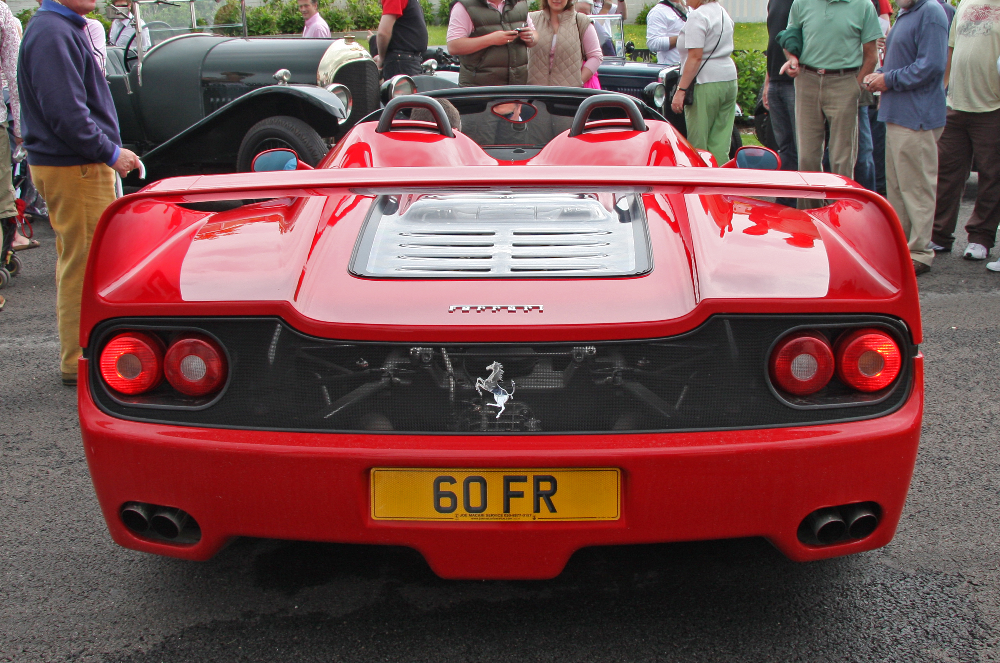

<!DOCTYPE html>
<html>
<head>
<link rel="stylesheet" type="text/css" href="nav.css">
<style type="text/css"> 
.zoomin img 
{
 height: 200px; width: 300px; 
 -webkit-transition: all 2s ease;
 -moz-transition: all 2s ease;
 -ms-transition: all 2s ease; 
 transition: all 2s ease; 
 } 
 .zoomin img:hover 
 { 
 height: 400px; width: 600px;
} 
</style>
</head>
<body background="bbbcxxmmm.jpg" >
<h2 id="top"></h2>
<div class="To">
<ul>
  <li><a href="home.html">Home</a></li>
  <li><a href="#contact">Cars Description</a></li>
  <li><a href="jquery-product-comparison\index.html">Cars Comparision</a></li>
  <li><a href="abtus.html">About the developers</a></li>
</ul>
</div>
<div class="vertical-menu">
  <a href="#">CARS</a>
  <a href="Audi A8l.html">Audi A8l</a>
  <a href="Bmw1.html">BMW I8</a>
  <a href="Bugatti Veyron.html">Bugatti Veyron</a>
  <a href="#" class="active">Ferrari F50</a>
  <a href="laferrari.html">Ferrari Laferrari</a>
  <a href="ford mondeo.html">Ford Mondeo</a>
  <a href="ford mustang.html">Ford Mustang</a>
  <a href="jaguar xe.html">Jaguar XE</a>
  <a href="jaguar xj220.html">Jaguar XJ220</a>
  <a href="koenisegg agera r.html">Koenisegg Agera R</a>
  <a href="lambo veneno.html">Lamborghini Veneno</a>
  <a href="lamborghini aventador.html">Lamborghini Aventador</a>
  <a href="lamborghini gallardo.html">Lamborghini Gallardo</a>
  <a href="lamborghini huracan.html">Lamborghini Huracan</a>
  <a href="mercedes amgcla.html">Mecedes AMG CLA</a>
  <a href="pagani huyara.html">Pagani Huyara</a>
  <a href="porsche carrera gt.html">Porsche Carrera GT</a>
  <a href="Rolls royce.html">Rolls Royce</a>
  <a href="volkswagen golf.html">Volkswagen Golf</a>
  <a href="zenvo st1.html">Zenvo ST1</a>
  
</div>
<div class="d">
 <p style="color:red;font-size:32px;">Jump to Particular Sections</p>
 <a href="#i" style="color:White;">Introduction</a><br>
 <a href="#t" style="color:White;">Interiors</a><br>
<a href="#p" style="color:White;">Pricing</a><br>
<a href="#e" style="color:White;">Engine</a><br>
<a href="#s" style="color:White;">Specifications</a><br>
</div>
<div class="c">
<left><h1> Ferrari F50</h1>

<left><h3 style="color:black;"><a name="i" >Interiors</a></h3>
<left><h2> Introduction</h2>
<p1>
<pre>
 The Ferrari F50 is a mid-engined range-topping sports car
 made by Ferrari. The F50 was introduced in 1995. The car
 is a two-door, two seat roadster with a removable hardtop.
 It has a 4.7 L naturally aspirated 60-valve V12 engine that
 was developed from the 3.5 L V12 used in the 1990 Ferrari
 641 Formula One car.

 Only 349 cars were made. The last F50 was produced in 
 Maranello, Italy, in July 1997.

 The F50's engine predated the car; it was used in the Ferrari
 333 SP for the American IMSA series in 1994, allowing it to 
 become eligible for the stock engine WSC category.
<left><h3>Differnt Views</h3>
<left><h4>Front View</h4>
<div class="zoomin">

</div>
<left><h4>Top View</h4>
<div class="zoomin">

</div>
<left><h4>Rear View</h4>
<div class="zoomin">

</div>
<left><h4>Side View</h4>
<div class="zoomin">

</div>
<left><h3 style="color:black;"><a name="t" >Interiors</a></h3>
<left><h3>Interiors</h3>
<div class="zoomin">

</div>
<br>
<div class="zoomin">

</div>
<br>
<div class="zoomin">

</div>
<left><h3 style="color:black;"><a name="p" >Interiors</a></h3>
<left><h3>Pricing</h3>
  F50s are already trading hands at upwards of $1 million apiece
  – and this year, at least one is expected to fetch upwards of 
  $2.5 million. Ferrari launched the F50 in 1995 as the successor
  to the legendary F40 that came before.
 <left><h3 style="color:black;"><a name="e" >Interiors</a></h3>
<left><h3>Engine</h3>
 Type: Tipo 040-derived, model SFE 4.7 VJGAEA
Position: mid-engine, rear-wheel drive
Configuration: longitudinal 60-valve 65° V12, derived from F1 unit
Aspiration: natural, with variable-length intake manifold via
 butterfly valve in intake manifold
Intake manifold: carbon fiber reinforced polymer
Block: nodular cast iron
Heads/Pistons: might-alloy aluminum heads/forged Mahle pistons
Oil sump: aluminium
Connecting rods: forged titanium
Crankshaft: forged steel
Cam covers/Oil and water pump housing: magnesium sand castings
Exhaust manifold: stainless steel
Engine weight: 436.5 lb (198.0 kg)
Timing gear: 5 valve/cyl (3 intake, 2 exhaust), 4 overhead 
camshafts (2 per cylinder bank) driven by low-noise Morse chain
Displacement: 4698 cc/286.68 ci
Max. power: 520 PS (382 kW; 513 hp) @ 8000 rpm

Ferrari F50 engine
Max. torque: 347 lb·ft (470 N·m) @ 6500 rpm
Power/Disp.: 109.1 bhp/litre
Weight/Power ratio: 5.8 lb/bhp
Bore x Stroke: 3.35 in (85 mm). x 2.72 in (69 mm)
Bore:Stroke ratio: 1.23:1 (oversquare)
Compression ratio: 11.3:1
Redline: 8500 rpm
Fuel cutoff: 8640 rpm[5]
ECU: Bosch Motronic 2.7 (controls the fuel feed, ignition 
timing, and variable length intake and exhaust systems)
Fuel feed: Sequential injection
Ignition: Bosch static electronic distributor-less ignition
Lubrication: dry sump, tank incorporated within the final 
drive housing, 3 scavenger pumps
Variable intake: butterfly valve in carbon fiber intake manifold
 closed at low rpm, open at high rpm
Variable exhaust: butterfly valve in upper tailpipes closed at
 low rpm, open at high rpm
Fuel tank: foam filled, aeronautical-style Sekur rubber bladder
, 27.7 US gal (105 L; 23 imp gal)
<left><h3>Transmission</h3>
 Configuration: longitudinal 6 speed manual + reverse, limited slip
 differential, RWD
Gear ratios: 2.933:1 (1st), 2.157:1 (2nd), 1.681:1 (3rd), 1.360:1 
(4th), 1.107:1 (5th), 0.903:1 (6th), 2.529:1 (reverse)
Final drive: 3.70:1
Flywheel: steel
Final Drive Assembly: aluminum sand casting
Remaining gearset housing: magnesium sand casting
Support bracing: steel
Clutch: dry, twin plate
Cooling: oil-water intercooler between gearbox lubricant and engine
<left><h3 style="color:black;"><a name="s" >Interiors</a></h3>
<left><h3>Specifications</h3>
<table bgcolor="red" width="70%" Border="1" cellpadding="5" cellspacing="5">
<caption></caption>
<tr>
<td>Manufacturer</td>
<td>Ferrari</td>
</tr>
<td>Production</td>
<td>1997 to 2001</td>
</tr>
<tr>
<td>Assembly</td>
<td>Maranello, Italy</td>
</tr>
<tr>
<td>Designer</td>
<td>Pininfarina</td>
</tr>
<tr>
<td>Class</td>
<td>Sports Car (S)</td>
</tr>
<tr>
<td>Engine</td>
<td>4.7 L DOHC 65 degree V12</td>
</tr>
<tr>
<td>Transmission</td>
<td>6-speed manual</td>
</tr>
<tr>
<td>Max. power</td>
<td>520 PS (382 kW; 513 hp) @ 8000 rpm</td>
</tr>
<tr>
<td>Top speed</td>
<td>194 mph (312 km/h)</td>
</tr>
<tr>
<td>0 to 97 km/h (0 to 60 mph)</td>
<td>3.8 s</td>
</tr>
<tr>
<td>Fuel Consumption</td>
<td>Combined 8 miles per U.S. gallon  </td>
</tr>
</table>
</pre>
</p1>
<font size="100px"><a href="#top" style="color:lightblue;"><p style="text-align:center">Back to top</a></font>
</div>
</body>
</html>